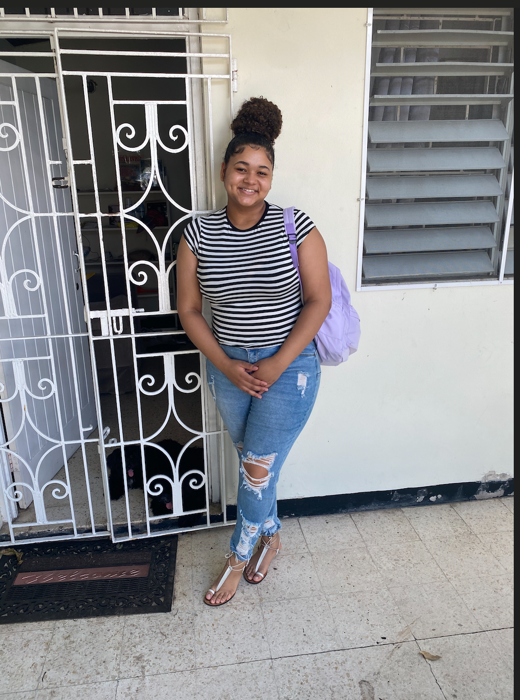

Hi, I'm Chae Francis
Welcome to my portfolio website! I'm a curious and creative soul who loves exploring new ideas, cooking tasty meals, and diving into great books. Here you'll find a glimpse into my passions, professional work, and projects.
What I Do
Whether it's experimenting in the kitchen, crafting creative content, or developing engaging stories, I pour my heart into everything I do. I’m always eager to learn and grow.
Get In Touch
Feel free to reach out via email: Chaefrancis27@gmail.com